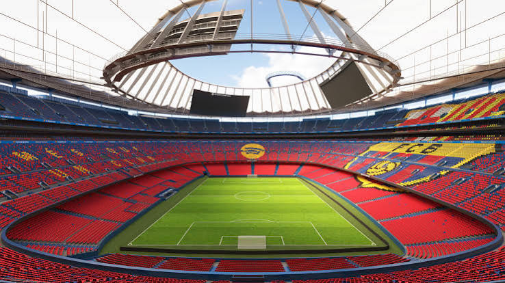
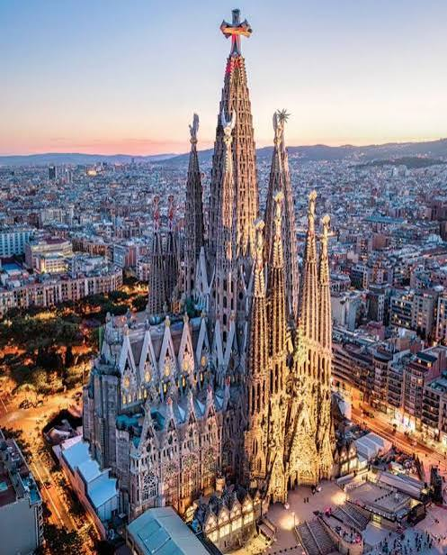
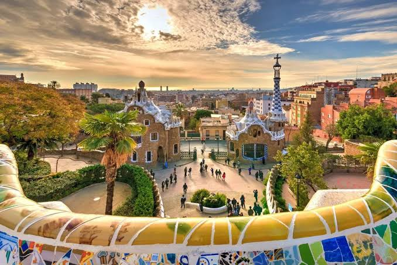

Espanha
Se você está procurando um destino acolhedor, a Espanha tem de tudo: cidades cheias de vida, culinária deliciosa e paisagens para todos os gostos.
Camp Nou

Para os amantes do futebol, não pode deixar de passar por Barcelona. Inaugurado em 1957, o Camp Nou é a casa do FC Barcelona e um dos estádios mais famosos do mundo. O clube tem um museu com troféus e a história de craques como Messi. Como o estádio está em reforma, confira no site oficial o que está aberto para visita antes de ir.
Sagrada Família

Obra mais famosa do arquiteto Antoni Gaudí, a Sagrada Família começou a ser construída em 1882 e segue em obras até hoje. Por dentro, as colunas lembram árvores e a luz colorida dos vitrais impressiona. Dica: compre o ingresso com antecedência, pois a fila costuma ser grande.
Parque Güell

Outro projeto de Gaudí, o Parque Güell reúne mosaicos coloridos, formas curvas e uma vista incrível de Barcelona. É um passeio tranquilo, ótimo para fotos e para relaxar entre um ponto turístico e outro.
Dica geral
A primavera e o outono têm clima agradável e menos turistas que o verão.